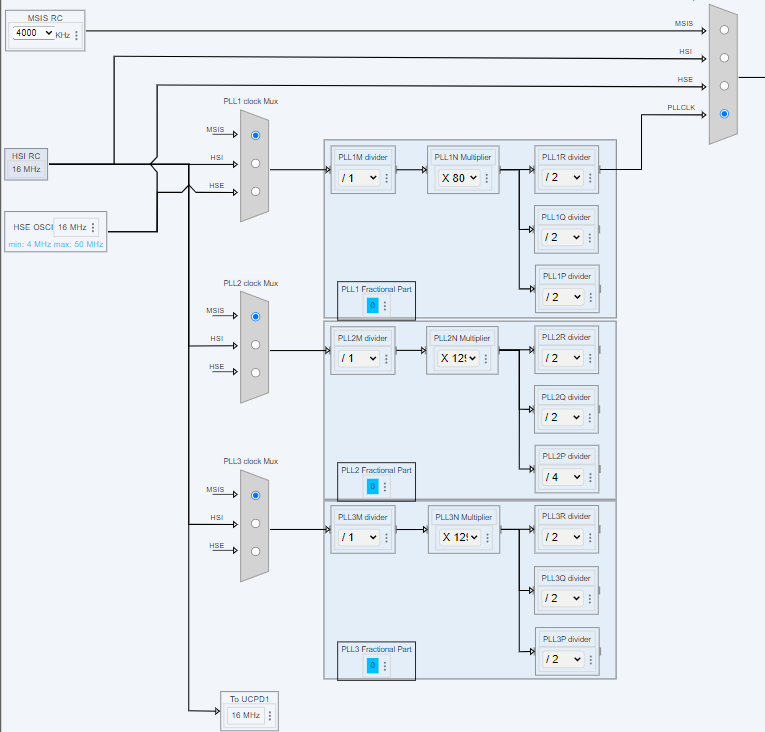
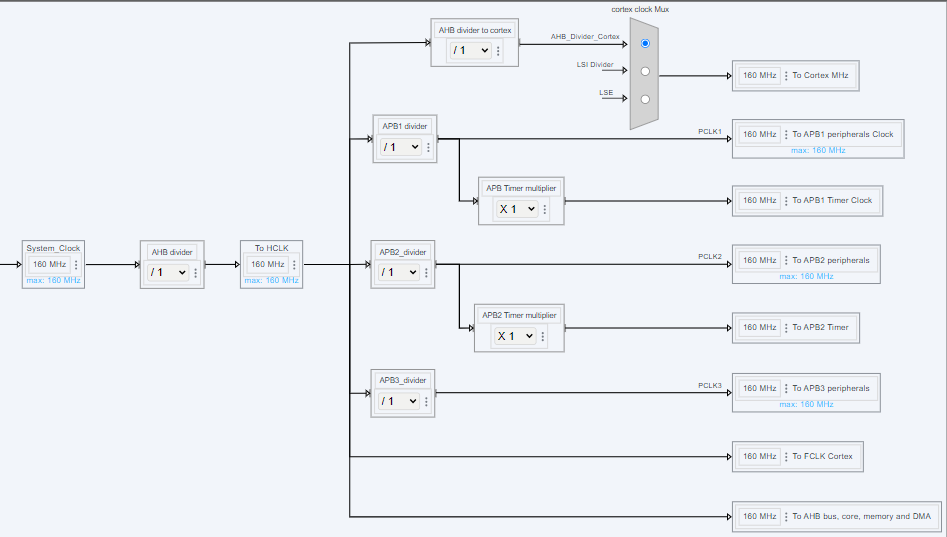
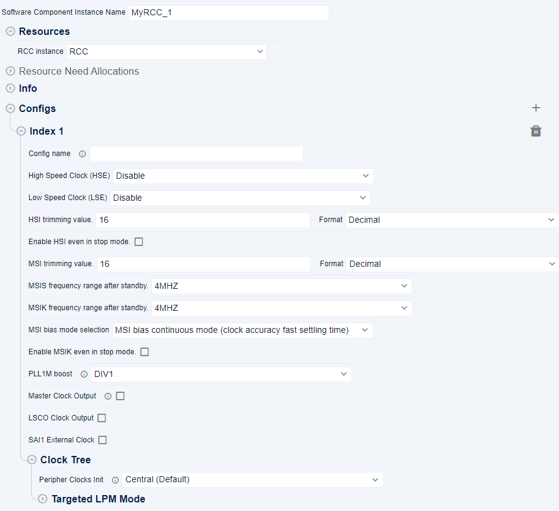

HAL RCC Initialization and de-initialization functions ¶
This section provides information about the HAL RCC Initialization and de-initialization functions migration.
System Clock Reset ¶
|
HAL1 |
HAL2 |
|
|---|---|---|
|
Function Name |
HAL_RCC_DeInit |
HAL_RCC_ResetSystemClock |
|
Purpose |
De-initialize the RCC system clock configuration and reset the RCC registers to their default values. |
Reset the system clock configuration to a known state using the default clock source after reset. |
|
Implementation |
The function HAL_RCC_DeInit performs a comprehensive reset of the RCC configuration, including: - Increasing CPU frequency if necessary.
|
The function HAL_RCC_ResetSystemClock simplifies the process by: - Enabling the HSI oscillator and setting it as the system clock source.
|
Rationale: The HAL2 function HAL_RCC_ResetSystemClock simplifies the process of resetting the system clock by focusing on enabling the source clock after reset setting it as the system clock source, and updating the SystemCoreClock variable. The HAL1 function HAL_RCC_DeInit performs a more comprehensive reset of the RCC configuration, including disabling various oscillators and resetting PLL configurations.
Oscillator Configuration ¶
|
HAL1 |
HAL2 |
|
|---|---|---|
|
Function Name |
HAL_RCC_OscConfig |
Multiple functions for specific configurations |
|
Purpose |
Initialize the RCC Oscillators according to the specified parameters in the RCC_OscInitTypeDef . |
Provide unitary functions for enabling, disabling, and configuring specific oscillators. |
|
Implementation |
The function HAL_RCC_OscConfig performs the following steps:
|
The functionality in HAL2 is divided into multiple unitary functions: hal_status_t HAL_RCC_HSI_Enable(void);
hal_status_t HAL_RCC_HSI_Disable(void);
void HAL_RCC_HSI_SetTrimming(uint32_t value);
hal_status_t HAL_RCC_HSI48_Enable(void);
hal_status_t HAL_RCC_HSI48_Disable(void);
hal_status_t HAL_RCC_SHSI_Enable(void);
hal_status_t HAL_RCC_SHSI_Disable(void);
hal_status_t HAL_RCC_MSIS_Enable(hal_rcc_msis_range_t clock_range);
hal_status_t HAL_RCC_MSIS_Disable(void);
hal_status_t HAL_RCC_MSIK_Enable(hal_rcc_msik_range_t clock_range);
hal_status_t HAL_RCC_MSIK_Disable(void);
void HAL_RCC_MSI_SetTrimming(uint32_t value, hal_rcc_msi_range_calib_t ranges);
hal_status_t HAL_RCC_LSI_Enable(hal_rcc_lsi_div_t divider);
hal_status_t HAL_RCC_LSI_Disable(void);
hal_status_t HAL_RCC_HSE_Enable(hal_rcc_hse_t mode);
hal_status_t HAL_RCC_HSE_Disable(void);
hal_status_t HAL_RCC_LSE_Enable(hal_rcc_lse_t mode, hal_rcc_lse_drive_t drive, hal_rcc_lse_glitch_filter_t glitch_filter);
hal_status_t HAL_RCC_LSE_Disable(void);
hal_status_t HAL_RCC_PLL1_SetConfig(const hal_rcc_pll_config_t *p_config);
hal_status_t HAL_RCC_PLL1_Enable(void);
hal_status_t HAL_RCC_PLL1_Disable(void);
hal_status_t HAL_RCC_PLL1_EnableOutput(uint32_t output);
hal_status_t HAL_RCC_PLL1_DisableOutput(uint32_t output);
hal_status_t HAL_RCC_PLL1_SetFRACN(uint16_t fracn);
|
Related use cases: System Clock Configuration
System Clock Configuration ¶
|
HAL1 |
HAL2 |
|
|---|---|---|
|
Function Name |
HAL_RCC_ClockConfig |
Multiple functions for specific configurations |
|
Purpose |
Configure the system clock according to the specified parameters in the RCC_ClkInitTypeDef . |
Provide unitary functions for setting and retrieving the system clock source and prescalers. |
|
Implementation |
The function HAL_RCC_ClockConfig performs the following steps:
|
The functionality in HAL2 is divided into multiple unitary functions: hal_status_t HAL_RCC_SetSYSCLKSource(hal_rcc_sysclk_src_t source);
hal_rcc_sysclk_src_t HAL_RCC_GetSYSCLKSource(void);
hal_status_t HAL_RCC_SetHCLKPrescaler(hal_rcc_hclk_prescaler_t prescaler);
void HAL_RCC_SetPCLK1Prescaler(hal_rcc_pclk_prescaler_t prescaler);
void HAL_RCC_SetPCLK2Prescaler(hal_rcc_pclk_prescaler_t prescaler);
void HAL_RCC_SetPCLK3Prescaler(hal_rcc_pclk_prescaler_t prescaler);
hal_status_t HAL_RCC_SetBusClockConfig(const hal_rcc_bus_clk_config_t *p_bus_clk_dividers);
|
The configuration settings for the system clock ¶
-
Configure MSI as PLL1 source.
-
Select PLL1R for the system clock source.
-
Set divider to reset value for each bus clock.


The configuration settings for the bus clock prescalers ¶
-
Set divider to reset value for each bus clock.


The configuration settings for Oscillators ¶
-
Set the oscillators configuration


Code Snippets ¶
hal_rcc_bus_clk_config_t config_bus; hal_rcc_pll_config_t config_pll1; HAL_RCC_MSIS_Enable(HAL_RCC_MSIS_FREQ_4MHZ); HAL_RCC_MSI_SetTrimming(16, HAL_RCC_MSI_RANGE_CALIB_4_TO_7); config_pll1.pll_source = HAL_RCC_PLL_SRC_MSIS; config_pll1.pll_m_boost = HAL_RCC_PLLMBOOST_DIV1; config_pll1.pll_m = 1; config_pll1.pll_n = 80; config_pll1.pll_p = 2; config_pll1.pll_q = 2; config_pll1.pll_r = 2; config_pll1.pll_fracn = 0; HAL_RCC_PLL1_SetConfig(&config_pll1); /** Configure the main internal regulator output voltage */ HAL_RCC_PWR_EnableClock(); if (HAL_PWR_SetMainRegulatorVoltageScalingRange(HAL_PWR_VOLT_SCALE_1) != HAL_OK) { return SYSTEM_CLOCK_ERROR; } if (HAL_RCC_PLL1_Enable() != HAL_OK) { return SYSTEM_CLOCK_ERROR; } HAL_RCC_PLL1_EnableOutput(HAL_RCC_PLL1_SYSCLK); /** Frequency will be increased */ HAL_FLASH_ITF_SetLatency(HAL_FLASH_ITF_LATENCY_4); HAL_RCC_SetSYSCLKSource(HAL_RCC_SYSCLK_SRC_PLLCLK); /** Initializes the CPU, AHB and APB busses clocks */ config_bus.ahb_clk_divider = HAL_RCC_HCLK_PRESCALER1; config_bus.apb1_clk_divider = HAL_RCC_PCLK_PRESCALER1; config_bus.apb2_clk_divider = HAL_RCC_PCLK_PRESCALER1; config_bus.apb3_clk_divider = HAL_RCC_PCLK_PRESCALER1; HAL_RCC_SetBusClockConfig(&config_bus);
Note
Note: The RCC clock configuration is generated in the mx_rcc_hal_init function in mx_rcc.c file under $YOUR_PORJECT_NAME$/$YOUR_PORJECT_NAME$_SW/generated/STM32Cube_CodeGen.
Oscillator Configuration Retrieval ¶
|
HAL1 |
HAL2 |
|
|---|---|---|
|
Function Name |
HAL_RCC_GetOscConfig |
Multiple functions for specific oscillator status retrieval |
|
Purpose |
Retrieve the current configuration of the RCC oscillators. |
Provide unitary functions for retrieving the status of specific oscillators. |
|
Implementation |
The function HAL_RCC_GetOscConfig retrieves the current configuration of the RCC oscillators and populates the RCC_OscInitTypeDef structure. |
The functionality in HAL2 is divided into multiple unitary functions for retrieving the status of specific oscillators and PLL: hal_rcc_osc_enable_status_t HAL_RCC_HSI_IsEnabled(void);
hal_rcc_osc_ready_status_t HAL_RCC_HSI_IsReady(void);
uint32_t HAL_RCC_HSI_GetTrimming(void);
uint32_t HAL_RCC_HSI_GetCalibration(void);
hal_rcc_osc_enable_status_t HAL_RCC_HSI48_IsEnabled(void);
hal_rcc_osc_ready_status_t HAL_RCC_HSI48_IsReady(void);
hal_rcc_osc_enable_status_t HAL_RCC_SHSI_IsEnabled(void);
hal_rcc_osc_ready_status_t HAL_RCC_SHSI_IsReady(void);
hal_rcc_osc_enable_status_t HAL_RCC_MSIS_IsEnabled(void);
hal_rcc_osc_ready_status_t HAL_RCC_MSIS_IsReady(void);
hal_rcc_msis_range_t HAL_RCC_MSIS_GetRange(void);
hal_rcc_osc_enable_status_t HAL_RCC_MSIK_IsEnabled(void);
hal_rcc_osc_ready_status_t HAL_RCC_MSIK_IsReady(void);
hal_rcc_msik_range_t HAL_RCC_MSIK_GetRange(void);
uint32_t HAL_RCC_MSI_GetTrimming(hal_rcc_msi_range_calib_t ranges);
uint32_t HAL_RCC_MSI_GetCalibration(hal_rcc_msi_range_calib_t ranges);
hal_rcc_msi_bias_mode_t HAL_RCC_MSI_GetBiasMode(void);
hal_rcc_osc_enable_status_t HAL_RCC_LSI_IsEnabled(void);
hal_rcc_osc_ready_status_t HAL_RCC_LSI_IsReady(void);
hal_rcc_osc_enable_status_t HAL_RCC_HSE_IsEnabled(void);
hal_rcc_osc_ready_status_t HAL_RCC_HSE_IsReady(void);
hal_rcc_osc_enable_status_t HAL_RCC_LSE_IsEnabled(void);
hal_rcc_osc_ready_status_t HAL_RCC_LSE_IsReady(void);
void HAL_RCC_PLL1_GetConfig(hal_rcc_pll_config_t *p_config);
uint32_t HAL_RCC_PLL1_GetOutput(void);
hal_rcc_pll_status_t HAL_RCC_PLL1_IsReady(void);
void HAL_RCC_PLL1_GetClockFreq(hal_rcc_pll_output_freq_t *p_clk);
uint16_t HAL_RCC_PLL1_GetFRACN(void);
|
System Clock Configuration Retrieval ¶
|
HAL1 |
HAL2 |
|
|---|---|---|
|
Function Name |
HAL_RCC_GetClockConfig |
Multiple functions for specific clock configuration retrieval |
|
Purpose |
Retrieve the current configuration of the system clock. |
Provide unitary functions for retrieving the prescalers and clock source. |
|
Implementation |
The function HAL_RCC_GetClockConfig retrieves the current configuration of the system clock and populates the RCC_ClkInitTypeDef structure. |
The functionality in HAL2 is divided into multiple unitary functions for retrieving the prescalers and clock source: hal_rcc_hclk_prescaler_t HAL_RCC_GetHCLKPrescaler(void);
hal_rcc_pclk_prescaler_t HAL_RCC_GetPCLK1Prescaler(void);
hal_rcc_pclk_prescaler_t HAL_RCC_GetPCLK2Prescaler(void);
hal_rcc_pclk_prescaler_t HAL_RCC_GetPCLK3Prescaler(void);
hal_rcc_sysclk_src_t HAL_RCC_GetSYSCLKSource(void);
|